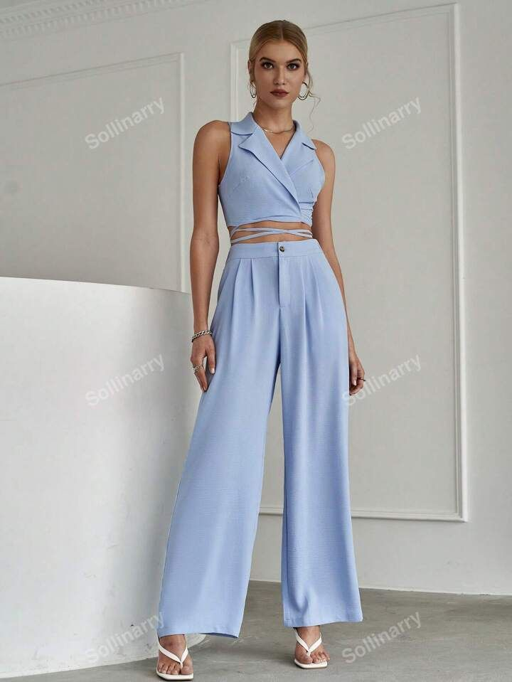

Lookbook: Tu Fuente de Inspiración en Estilo
En Cielo de Algodón, creemos que cada prenda cuenta una historia y que tu estilo es una forma poderosa de expresión personal. Nuestro Lookbook no es solo una galería de combinaciones, es una invitación a soñar, experimentar y encontrar armonía entre moda y emociones. Aquí encontrarás una selección curada de looks completos pensados para distintos momentos de tu vida: desde paseos bajo el sol hasta días de trabajo creativo o tardes especiales. Cada combinación ha sido pensada para potenciar la belleza del azul claro, el blanco puro, los tonos pastel y los tejidos suaves, creando un lenguaje visual lleno de calma, elegancia y libertad.
¿Qué es un Lookbook?
Un lookbook es una guía visual diseñada para inspirarte y mostrar cómo combinar prendas, accesorios y estilos según tendencias o temáticas específicas. Es una herramienta utilizada en el mundo de la moda para presentar colecciones, ideas estilísticas o productos de una manera estética y cohesionada. En el caso de Cielo de Algodón, nuestro lookbook gira en torno a la dulzura de los tonos celestes, la elegancia discreta y la conexión emocional con la ropa. Aquí no encontrarás solo outfits, sino propuestas que armonizan con diferentes estados de ánimo, estaciones del año y momentos de tu día a día.
Estilo y Sentido: ¿Por Qué el Azul Claro?
El azul claro y sus tonalidades relacionadas, como el celeste, el azul hielo o el azul pastel, son el eje central de nuestras combinaciones. ¿Por qué? Porque estos colores transmiten serenidad, frescura y confianza. Son colores que evocan el cielo, el mar, la brisa y la pureza. El azul claro se ha convertido en nuestra paleta emocional, en una forma de reconectar con lo esencial: la calma, la delicadeza y la paz interior. Cada look que te presentamos busca despertar esas sensaciones a través del diseño, la textura y la armonía de cada pieza.
Inspiración para Cada Momento
Nuestro Lookbook está organizado en categorías pensadas para reflejar diferentes momentos de tu vida:
- Look diario: Combinaciones cómodas y versátiles para tu rutina diaria. Pantalones holgados, blusas ligeras, mochilas pastel y zapatillas suaves.
- Look romántico: Vestidos vaporosos, encajes suaves, tonos lavanda y azul cielo que acompañan momentos de conexión, amor o autoconocimiento.
- Look urbano: Estética moderna, con toques vintage, mezclando azul hielo con blanco y accesorios geométricos. Pensado para recorrer la ciudad con elegancia sutil.
- Look de verano: Tejidos ligeros, faldas cortas, gafas de sol y bolsos artesanales en una paleta inspirada en el cielo despejado y las tardes cálidas.
- Look artístico: Diseñado para quienes se expresan a través de su ropa. Capas suaves, cortes asimétricos, estampados etéreos y accesorios únicos.
Looks Destacados
1. Encanto Pastel: Vestido celeste de algodón orgánico con manga globo, combinado con bolso tejido y sandalias blancas. Ideal para caminatas al atardecer.
2. Azul Urbano: Camisa oversized azul hielo, pantalón claro de lino y gafas metálicas. Elegancia relajada para días activos.
3. Nube de Seda: Blusa vaporosa blanca con falda plisada celeste y accesorios de perlas. Perfecto para una cita o un brunch delicado.
4. Cielo Minimal: Mono azul pálido de una sola pieza, zapatos neutros y cinturón textil. Una opción moderna y ligera.
5. Brisa Marina: Conjunto de top tejido azul cielo y pantalón blanco con textura. Look cómodo y con aire costero para días cálidos.
Cómo Crear tu Propio Look
El objetivo del Lookbook no es que copies cada combinación al pie de la letra, sino que te inspires para crear tu propio estilo. Aquí algunos consejos:
- Juega con capas: Combina piezas ligeras como blusas con tejidos más estructurados como chalecos o cardigans de tonos suaves.
- No temas al monocromo: Vestirte de un solo color (como celeste o blanco) puede generar una estética visual poderosa y serena.
- Agrega un toque artesanal: Un bolso tejido, una bufanda hecha a mano o accesorios artesanales aportan alma y singularidad.
- Contrasta texturas: Algodón suave con lino, seda con denim pastel. El contraste eleva cualquier look sin perder delicadeza.
Fotografía y Estética Visual
Cada fotografía del Lookbook ha sido cuidadosamente producida para capturar no solo la ropa, sino la esencia de cada outfit. Usamos luz natural, paisajes serenos y escenarios limpios para que la atención esté en los detalles: las costuras, los pliegues, los colores y las emociones. No hay estridencia, solo armonía. Queremos que al ver nuestras imágenes, sientas calma, belleza y ganas de expresarte a través de tu vestimenta.
Ropa que Cuenta Historias
En Cielo de Algodón, no creemos en la ropa como una simple cobertura. Creemos en la ropa como un reflejo de tu mundo interior. Cada pieza de nuestro catálogo fue creada para acompañarte en tus procesos, tus momentos de alegría, tus días introspectivos, tus caminos nuevos. El Lookbook es un puente entre lo visual y lo emocional, una galería donde puedes reconocerte, descubrir y soñar.
Lookbook Interactivo
Próximamente, lanzaremos una versión interactiva de nuestro Lookbook, donde podrás armar tus propias combinaciones desde el sitio, guardar tus favoritos y compartir tus looks personalizados. Queremos que esta sección sea una experiencia de juego, creatividad y autodescubrimiento. Estás invitada a ser parte activa del estilo que construimos juntas.
Conclusión
El Lookbook es mucho más que una sección visual: es un diario de estilo, un espacio de inspiración y una celebración de la belleza cotidiana. Te invitamos a explorar cada look, imaginar tus propios caminos y dejar que el color azul claro, en todas sus formas, ilumine tus días con ligereza, dulzura y encanto. ¡Gracias por hacer de Cielo de Algodón parte de tu historia!

Encanto Pastel
Vestido celeste combinado con bolso tejido y pendientes de perla. Ideal para paseos de verano o brunch con amigas.

Azul Urbano
Conjunto de falda azul hielo y blusa blanca, con gafas retro y zapatillas claras. Perfecto para la ciudad.

Día de Nubes
Camisa oversized azul cielo, jeans mom fit y collar plateado. Estilo casual con mucho encanto.
.jpeg)
Cielo Romántico
Blusa de encaje pastel con falda plisada y sandalias suaves. Un look dulce y femenino para días especiales.